Given five pictures and 20 minutes, Opus 5.5 and Haiku 5.5 rebuilt a gripper finger about as well as a careful hand-built model. Four of the six agents stopped on their own within six minutes.
We design a lot of small parts for our robots: fingers, jigs, holders. Most start the same way, from a photo or a vendor drawing and some measurements. I wanted to know how far a coding agent gets on that job by itself, so I built a small benchmark around one part: the linear_4310 finger from the i2rt YAM gripper.
The task
The agent gets five pictures of the finger and nothing else about its shape. It has to write a build123d script, model.py, that builds the part in millimetres.
1 · perspective
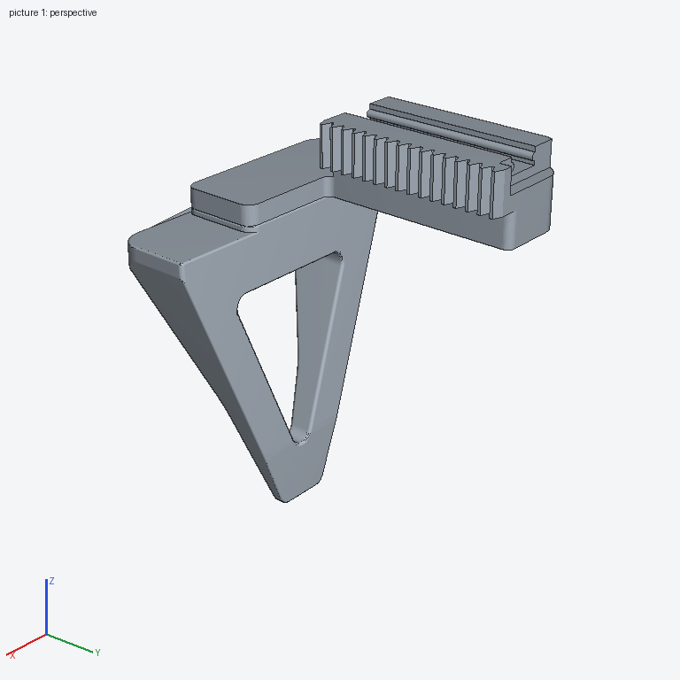
2 · perspective, from below
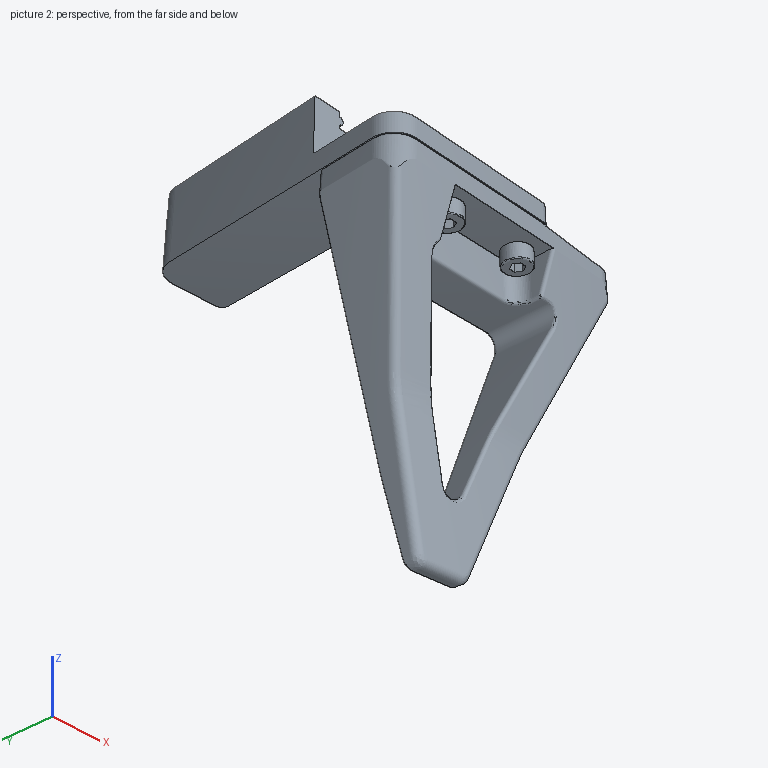
3 · orthographic, scale bar
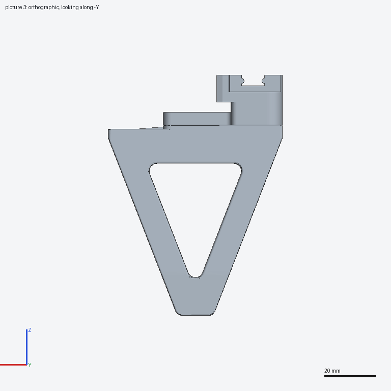
4 · orthographic, scale bar
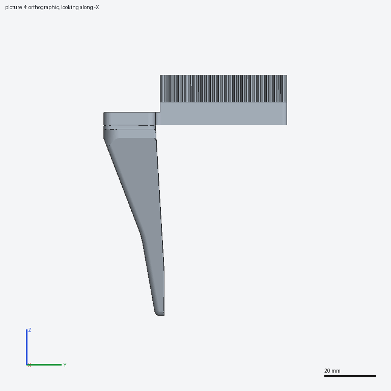
5 · section at Z = +41 mm
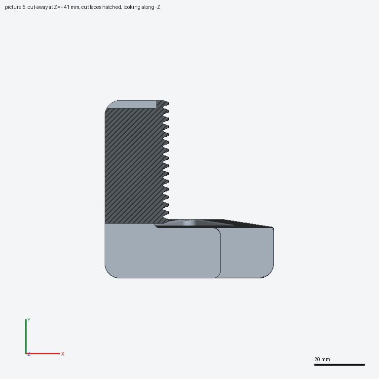
Two pictures are perspective views. Two are orthographic with a 20 mm scale bar, and one is a horizontal section through the rack teeth. The prompt also gives the largest dimension, 93.84 mm. A helper tool builds the agent's script, redraws the same five pictures of its model and writes a silhouette diff against each target. The agent can run it as often as it likes within 20 minutes of wall-clock time. Whatever model.py holds at the end is scored.
The script may only import build123d and a few standard modules, can't read files or embed long tables of coordinates, and is capped at 333 faces and 8 solids. The sandbox has no network and no web search.
How it's scored
The hidden reference is the vendor's mesh of the finger, 68.0 × 71.6 × 93.8 mm. The reward is
(0.3 × volume IoU + 0.4 × surface F-score + 0.3 × part match)²
Volume IoU is overlap of the solids. The surface score checks how much of the reference surface lies near the submission and vice versa, at 0.41, 1.09 and 1.63 mm. The mesh is split into 101 surface patches, each weighted by the square root of its area, so small features like teeth and screw pockets count. Position doesn't matter, and any axis-aligned rotation is allowed. Squaring makes it strict: the reference scaled up 1% scores 0.944, and 5% scores 0.321.
The agent never sees its reward, only the silhouette diffs.
| Calibration submission | Reward |
|---|
| Bounding-box block | 0.003 |
| Rough model: plate and block | 0.121 |
| Careful hand-built model | 0.689 |
Results
| Model | Reward | Volume | Surface | Part | Patches | Stopped |
|---|
| Opus 5.5 | 0.704 | 0.862 | 0.800 | 0.867 | 70 / 101 | 2.4 min |
| Haiku 5.5 | 0.699 | 0.837 | 0.810 | 0.870 | 72 / 101 | 2.5 min |
| Gemini 3.8 Flash | 0.627 | 0.803 | 0.761 | 0.821 | 78 / 101 | 20 min (limit) |
| Grok 4.7 | 0.605 | 0.856 | 0.725 | 0.769 | 63 / 101 | 14.9 min |
| Sonnet 5.5 | 0.464 | 0.785 | 0.624 | 0.653 | 30 / 101 | 1.0 min |
| Codex (gpt-6-luna) | 0.219 | 0.513 | 0.434 | 0.466 | 70 / 101 | 5.4 min |
Patches is how many of the 101 reference surface patches were matched at the middle tolerance, 1.09 mm. Opus and Haiku land within 0.005 of each other and of the careful hand-built model. With one run each, I'd call that a tie.
Opus 5.5Haiku 5.5Gemini 3.8 FlashGrok 4.7Sonnet 5.5Codex
Reward of every saved model.py, graded afterwards. The agents never saw these numbers. Hollow points are saves that failed to build and score 0. Each line ends when the agent stopped.
What they built
Each model's final part, rendered from the first picture's camera, next to the target.
Target
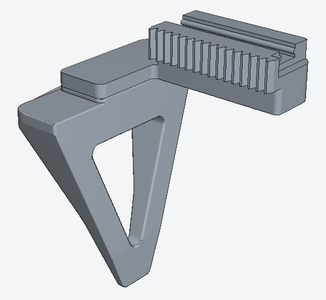
Opus 5.5 · 0.704
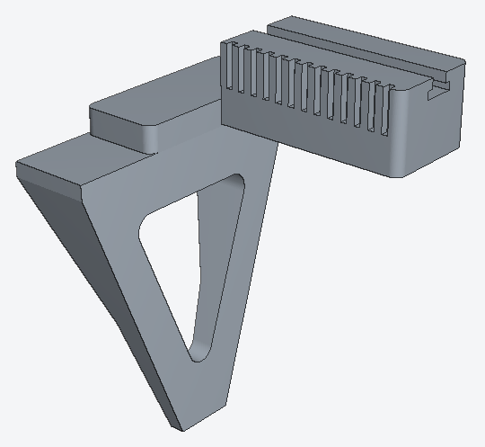
Haiku 5.5 · 0.699
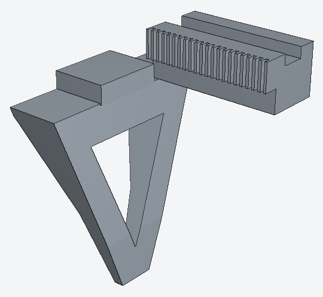
Gemini 3.8 Flash · 0.627
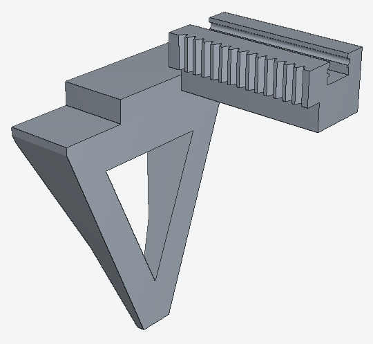
Grok 4.7 · 0.605
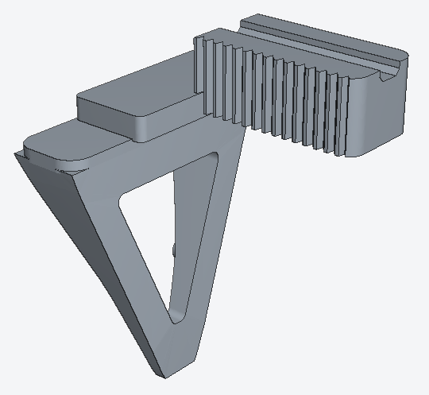
Sonnet 5.5 · 0.464
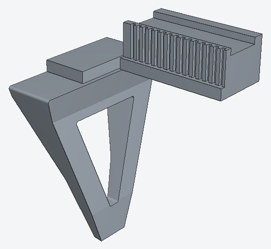
Codex · 0.219
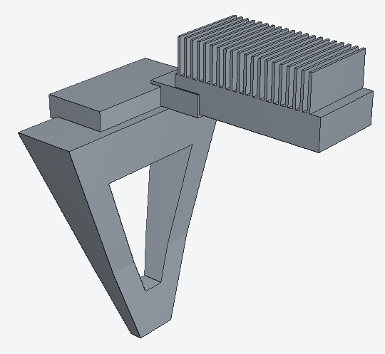
And the orthographic side view, where the window, taper and rail block are easiest to compare.
Target
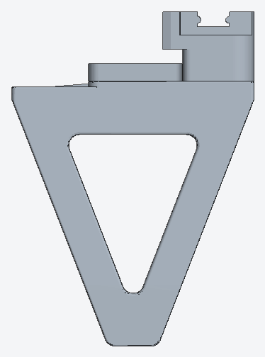
Opus 5.5 · 0.704
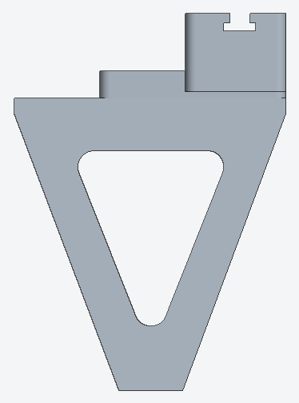
Haiku 5.5 · 0.699
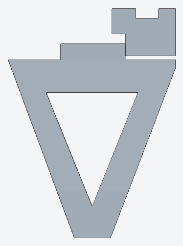
Gemini 3.8 Flash · 0.627
Grok 4.7 · 0.605
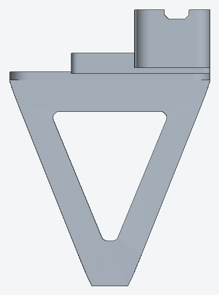
Sonnet 5.5 · 0.464
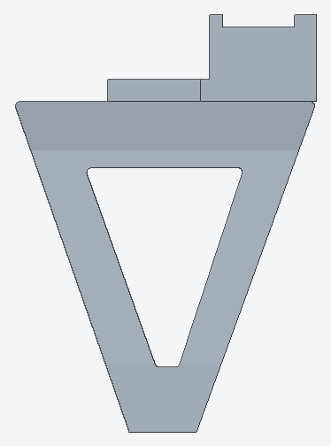
Codex · 0.219
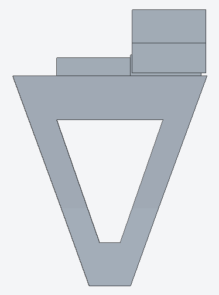
Every model found the main features: the triangular window, the tapered web, the toothed rack and the rail block. The scores mostly come down to millimetres. Codex's part has all of them, but its rail block sits a few millimetres low and the web and window are shifted, which is outside the surface tolerances everywhere. Grok's web and window are close, but its rail block is one plain box without the target's step, and its slot is a rounded notch rather than a T.
What stood out
- Most didn't use the time. Sonnet stopped after 1 minute, Opus and Haiku after about 2.5, Codex after 5.4. Each had 20.
- Gemini 3.8 Flash was the exception, and it kept improving. Its first save at 6 minutes scored 0.003; it reached 0.352 at 16 minutes and 0.627 at 19.5, then hit the limit. It's the clearest hint here of what the extra time is worth.
- Grok 4.7 used more of the time, then levelled off. It spent 6 minutes measuring the pictures before its first save, reached 0.617 at about 13 minutes, then made small changes around 0.60 and stopped at 15. It ran 20 builds, more than twice as many as any other model, and its own silhouette checks read 0.95 to 0.98. It finished fourth, 0.022 behind Gemini 3.8 Flash.
- Opus got worse and couldn't tell. It peaked at 0.739 at 80 seconds and finished at 0.704. Silhouettes don't show the difference.
- Codex could see it was off and stopped anyway. Its own silhouette checks read 0.60 to 0.86, against 0.90 to 0.98 for the Claude models.
- Sonnet's outline was close but its surfaces weren't. Its volume overlap is near the others', but it matched 30 of 101 surface patches against 70 to 78 for the rest.
- Two other models never produced a part. Gemini 4 Argon ran twice, and both times spent the full 20 minutes measuring the pictures with Python, reading pixel values, cropping and zooming (31 and 39 shell commands), without ever writing a
model.py. Gemini 3.1 Pro read the prompt and the pictures, replied with a single ".", and exited after 18 seconds, which looks more like the preview model not working with Gemini CLI than a CAD result. I left both out of the table.
Caveats
- One run per model, so small gaps mean nothing. Opus versus Haiku is noise.
- The harness differs by vendor: Claude models ran in Claude Code, Codex in the Codex CLI, Gemini in Gemini CLI 0.67.0 and Grok in Grok CLI 1.0.77, all at default settings with web search off. Harness and model aren't separated.
- Grok ran three to four days after the others, with the same prompt, pictures, 20-minute limit and sandbox, through a proxy that allowed only xAI's API. I also turned off the Grok CLI's image and video generation tools, which have nothing to do with CAD. The run cost $4.83.
- Codex ran about 9 hours after the Claude models. The sandbox's proxy refused a few of its requests to OpenAI file and analytics hosts. It still described details visible only in the pictures, so it did see them.
- The reference is the vendor's decimated 8,000-triangle mesh, not a CAD file, and I haven't compared it against a physical finger.
- The careful hand-built model was made with the part's exact X and Y extents, which the agents don't get, so it's a calibration point, not a competitor.
- The i2rt files are public. The sandbox has no network, but a model could remember rough dimensions.
Next
The obvious gap is time. Most agents stopped long before they had to, and the two that worked longest, Gemini 3.8 Flash and Grok, kept getting better for a while. Next I want to make them use the full 20 minutes, or resume them when they try to stop, and run several repeats per model so the differences mean something.